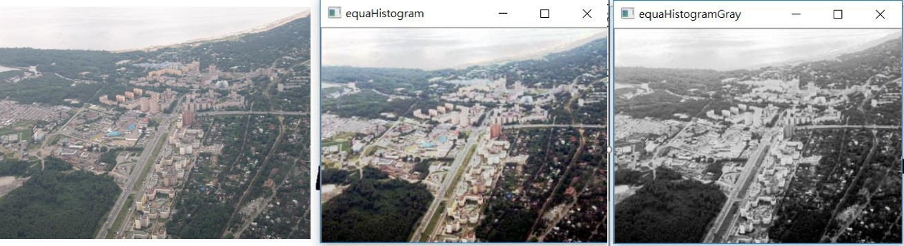

3-6加強圖片對比
程式說明:
運行結果:
底下第一張圖是原圖，可以看的出來霧濛濛，第二張做了彩色的直方圖拉伸，色採看起來比較鮮豔，
底下第三張圖則是對灰階做了直方圖的拉伸。

範例程式:
#include <iostream>
#include <opencv2/opencv.hpp>
#include <opencv2/highgui/highgui.hpp>
#include <vector>
int main(int argc, char** argv)
{
cv::Mat img, imgResize;
img = cv::imread("Image.jpg");
std::vector
if (img.empty())
{
std::cout << "無法讀取影像" << std::endl;
return -1;
}
cv::resize(img, imgResize, cv::Size(img.cols/2,img.rows/2));
cv::Mat finalImg(cv::Size(img.cols / 2, img.rows / 2), CV_8UC3, cv::Scalar(0, 0, 0));
cv::split(imgResize,splitImage);
for (int i = 0; i < 3;i++)
cv::equalizeHist(splitImage[i], splitImage[i]);
for (int i = 0; i < img.rows / 2; i++)
{
for (int j = 0; j < img.cols / 2; j++)
{
finalImg.at
finalImg.at
finalImg.at
}
}
cv::imshow("equaHistogram", finalImg);
cv::waitKey(0);
cv::cvtColor(imgResize, imgResize, CV_RGB2GRAY);
cv::equalizeHist(imgResize, imgResize);
cv::imshow("equaHistogramGray", imgResize);
cv::waitKey(0);
return 0;
}